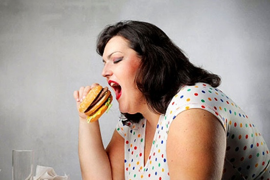

Anorexia Nervosa
Anorexia Nervosa é um transtorno no qual o paciente sofre por conta de uma visão distorcida do próprio
corpo, o mesmo acha que está muito acima do peso e acaba restringindo sua alimentação, esse ato gera uma enorme perda de peso.
Esse transtorno geralmente começa na adolescência e principalmente em mulheres, pessoas que tem esse transtorno limitam seu consumo
de alimentos mesmo com uma grande perda de peso e não percebem que tem um problema.
Existem dois tipos de Anorexia Nervosa:
- Tipo restritivo: A pessoa se limita de ingerir alimentos e não come compulsivamente;
- Tipo purgativa: A pessoa se limita de ingerir alimentos, mas, também come compulsivamente e pratica a purgação em intervalos regulares.
Os sintomas mais comuns são:
- Mesmo depois de emagrecer o indivíduo tem uma percepção irreal da imagem;
- Não se queixar sobre a perda de peso;
- Resistir ao tratamento;
- Ansiedade;
- Depressão;
- Tontura;
- Desmaios;
- Pressão baixa;
- Isolamento social;
- Insuficiência de alguns órgãos;
- Infertilidade;
- Problemas cardíacos.
|
|
Bulimia
Bulimia é um distúrbio alimentar, no qual se parece com
a anorexia em pontos como a distorção de imagem, porém além
disso a pessoa induz vômitos ou diarreias, com ou sem o uso de medicamentos.
Sintomas:
- A ingestão de diversos alimentos e calorias seguida de culpa e a indução de vômitos e uso de laxantes;
- Náuseas, refluxo, diarreia e dor abdominal;
- Nos casos mais graves, desidratação, perda de dentes, osteopenia e osteoporose e alterações cardíacas.
|
|
Ortorexia
É um transtorno que se caracteriza pela preocupação excessiva com a alimentação, pessoas com esse transtorno ficam
obcecadas a ingerir alimentos sem agrotóxicos, conservantes ou açúcar e não apenas isso, como também chegam a pesquisar
informações como a alimentação do boi, o tipo de adubo entre outros.
Sintomas:
- Preocupação excessiva na origem e no modo de preparo dos alimentos;
- Obsessão por rótulos;
- Restrições alimentares;
- Consumo apenas de produtos orgânicos;
- Exclusão de alimentos com agrotóxicos;
- Retirada de alimentos da dieta, como carne, leite, gorduras e carboidratos;
- Sinto de culpa e ansiedade ao ver alimentos não saudáveis;
- O individuo não participa de eventos/atividades sociais para não consumir diferentes tipos de alimento;
- Exclusão de lactose, glúten e gordura da dieta.
|
|
Transtorno de Compulsão Alimentar Periódica.
Transtorno de Compulsão Alimentar Periódica (ou TCAP), é um distúrbio alimentar, no qual o paciente, na maioria dos casos,
come descontroladamente mesmo estando com o estômago completamente cheio.
A ingestão excessiva de alimentos pode se dar por vários motivos, sendo alguns
deles, um alívio emocional, quando a pessoa sente
sentimentos extremos, como raiva, ansiedade, tristeza entre outros, acabam
de não saber como lidar com o que sentem, e como forma de aliviar e/ou sentir
prazer acabam comendo, porém em diversos casos, não sabem/ não conseguem parar
de comer.
Sinais
Por se tratar de uma doença de mais difícil reconhecimento, falaremos sobre sinais que chamam atenção como:
- Obesidade (ganho contínuo de peso)
- Depressão
- Reclusão
- Baixa autoestima
|
 |